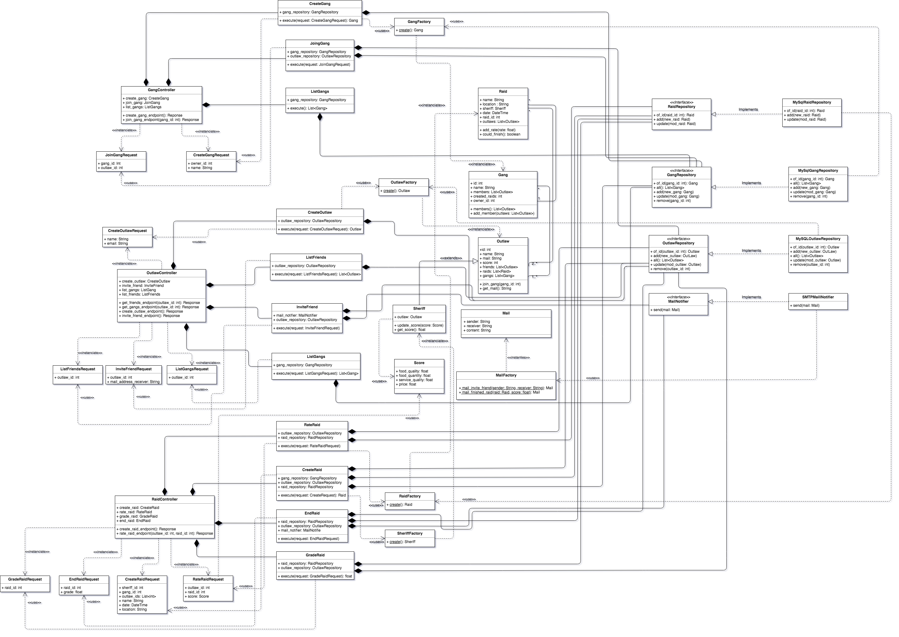
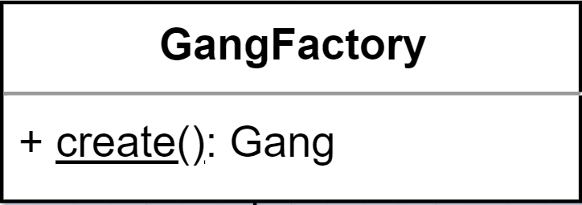

Design¶
{kind=link}
In the design stage of The Sheriff application, it was figured out that the best architecture style to start building the project was the Hexagonal Architecture.
This decision was taken for three main reasons:
Is the one and only style practiced in class. (The others will be taught in other subjects in the future)
The requirements of the application can be easily split in different layers: Use cases are very clear, model objects can be easily distinguished and finally is mentioned that there will have to be used some mail and database services that can be located in an outer layer.
It is easy to maintain due to the aforementioned modularity and because of this outer layer named infrastructure can be replaced in an straightforward way.
Effectively, in the next lines is going to be explained what exactly is this architecture. Later, the design decisions and the patterns taken, and finally, some problems that have forced the team to, at least, discuss their initial approach.
Hexagonal Architecture¶
The Hexagonal Architecture is a software architectural style that allows the developer to easily distinguish between the outer and the inner part of the software, using three main layers: Infrastructure, Application and Domain (ordered from the external to the internal part).
The external part, the Infrastructure, is basically formed by the User’s Interface, database and messaging servies.
In the middle layer, the Application, is basically formed by the application use cases.
In the inner layer, the Domain, there are basically model objects, the concept representation of the business.
This organisation allows for a higher level of isolation, testability, and control over the code. Each layer of the application has a strict set of responsibilities and requirements. This separates the logic and the functionality, and shows how those layers should interact with each other.
In the next lines it is going to be explained how concretely in The Sheriff application this architecture has been managed.
The Sheriff Design¶
After analysing The Sheriff requirements, the first task to be done was to define the concept of the application, so the design of the Domain. Later, the next task was to identify the use cases in the Application layer and finally create the Infrastructure and decide the technologies used.
Let’s start with the domain.
Domain¶
Here there were designed the main domain entities: Outlaw, Gang and Raid. This classes contain all pertinent business logic: variables that define the object and methods that access these variables and also do some basic logic related to its concept.
Above see the example of the Gang class:

The next design pattern to add would be a creational pattern. It was desired to abstract the creation of these objects defined before, so there were created factories for every domain entity that would have a create factory method.
{kind=link}
Finally, again for every model object, it was designed a “repository” interface, where it will be located all the methods to implement the contracts. These repositories are very important because these will be the classes that will be injected in the pertinent use cases (Application) and also implemented in Infrastructure.
During the design of the infrastructure repositories and the domain entities, there were several discussions about which kind of objects some of their implemented methods should return.

At this point it was identified that some concepts were not being taken into account. Later on, in the middle of the project’s life, we discovered that we had to add new classes to fulfill some use cases.
Due to the requirements related with create/end raids we discovered that we needed an Outlaw derived class named Sheriff, an outlaw with extra features. This Sheriff, regarding the raid, would need some attributes grouped in another class named Score for rating the raids. Finally, regarding domain, due to the use case of sending notifications that would bring us to send notifications by email, a class named Mail was designed (with its Factory and Notifier).
Application¶
Application contains the main use cases identified by the team and also some complementary ones:
List gangs
Create gang
Create outlaw
Create raid
Invite friend
Join gang
List friends
List gangs
Rate raid
Grade raid
End raid
Send notifications
These use cases generally contain injected their collaborators and have an execute method to trigger the action of the use case they implement. There were several discussions about to unify or separate use cases (concretely those that refer to do some actions in the raid). Finally, the solution was to separate them and trigger them separately too.

In this layer it was also designed an approach to deal with the information received from the endpoint. The Request classes, located in the controller, were created to abstract the needed information to execute the pertinent use case in an outer class, to ease the SRP.
The Requests classes are:
Join Gang Request
Create Gang Request
Create Outlaw request
Create Raid Request
Rate Raid Request
End Raid Request
{kind=link}
Infrastructure¶
Infrastructure contains the RESTful API endpoints and MySQL repositories.
These endpoints are triggered within the controllers that have injected their required use cases as collaborators to achieve the needed functionality and invoke these pertinent use cases (see the image above, focusing on the GangController).
The MySQL repositories implement the contracts defined by the domain interfaces. Take the following image as an example:

To fulfill the use cases that implied to send a notification, SMTP Mail Notifier was also included as collaborator.
All the problems dealt with in this package were which technologies to choose, and all this information can be found in the next section, which focuses on Infrastructure details.